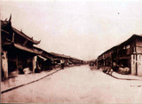

1
南京东路位于上海市黄浦区，它东起外滩、西至西藏中路，全长1599米，其中河南中路以西部分为步行街，素有“中华商业第一街”之称。
如今到上海旅游的人们都会选择到名店林立的南京路上走一走，看看上海最繁华的商业百货和最著名的老字号，捎一点上海老特产。目睹如今的繁华，今人可能难以想到在两百年前这里曾是“溪涧纵横”的卑湿之地。
2
1842年的一声炮响，第一次鸦片战争失败，《南京条约》签订，上海开埠。
清道光30年（1850年）外籍商人在租界内组织跑马总会，最先在今南京东路、河南中路一带占地80余亩辟作花园，围绕花园筑跑马道，成为上海第一个跑马场。次年，又从外滩修建了通往花园的小道，也即是现在的外滩到河南中路一段，因国人经常看到外国人在这里骑马，所以就称这条路为马路，它的正式名字叫花园弄（Park Lane）。这条短短不足500米的花园弄就是日后南京路的雏形，也是中国第一条近代意义上的马路。为纪念《南京条约》带来的利益，1865年英租界工部局正式命名大马路为“南京路”。据《沪游日记》载，当时南京路“其平如砥”，一经损坏，随时修补；马路每日打扫两次，又有洒水车洒道，“终久异常洁净”；十里长街“两旁所植，葱郁成林，洵堪入画”。

3
南京东路，不仅因其路“其平如砥”而成为南京东路，更因其中生机勃勃的各色资本加入，而筑造起的风格各异的建筑而兴盛。
1850年以来，建筑建起又重建，我们也许难以知道这中间哪些建筑建起又倒下，但是我们还有很多现存的建筑，通过体察她们，我们得以管中窥豹，感叹交杂在这短短十里长的路上的上海近现代史。
4
通过对过去一百年来南京东路上的历史建筑中发生的变化可视化，我们来看不同的时间点发生了什么。图以竖轴为不同的建筑，横轴为时间，范围为1910年到2019年。
20世纪10年代，外国列强忙于应对战争，中国商人则抓住了机会，先后创建了先施、永安、大新、新新百货公司，它们互相竞争，许多创新都属国内先例，如第一部扶手电梯，第一次用广播来吸引顾客，第一个歌舞厅。文化，娱乐，商业相长，茅盾先生在其书《上海的早晨》中评价南京东路的建筑“七重天”为上海人心目中梦寐以求、魂牵梦绕的顶级豪华娱乐场所。日军侵略中国后，南京东路由于在租界内相对安全，形成了畸形的繁荣，称为“孤岛时期”。上海沦陷后，多个建筑曾为抗日救亡人士、学生提供过临时的住所。新中国成立后，永安百货顶部的塔楼升起了上海第一面红旗。几乎所有公司进入了国有化阶段，每栋建筑均有不同的新动向。
结语
如今的南京东路古今事物百花齐放，将要继续诉说上海不一样的故事。您在后面可以自行探索南京街头！